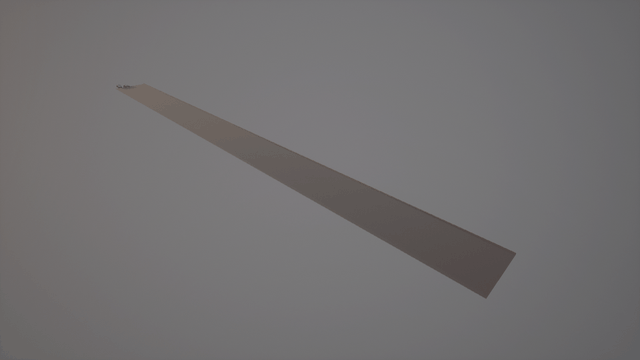
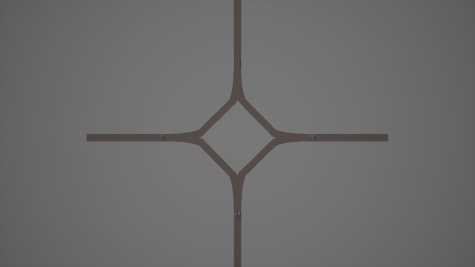
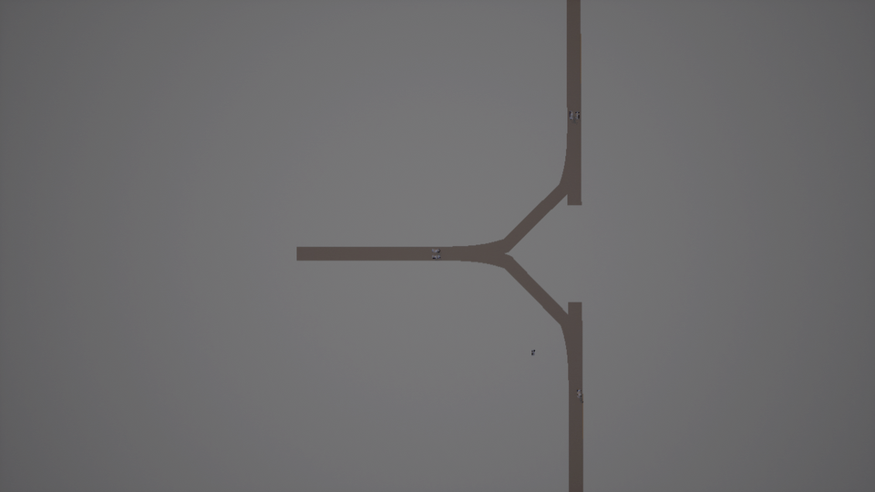
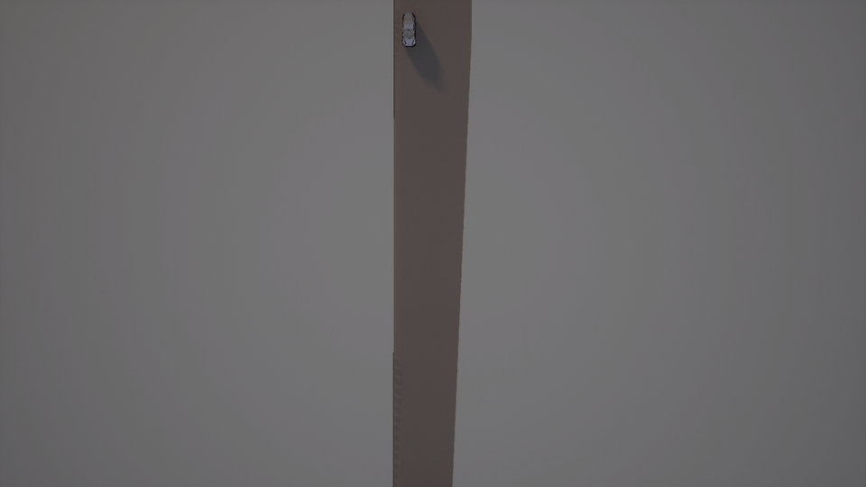
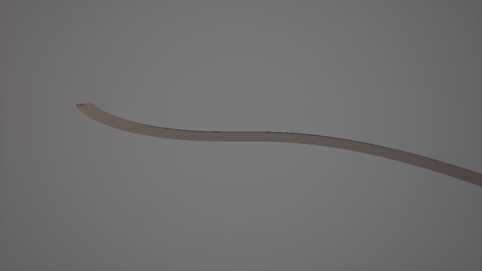
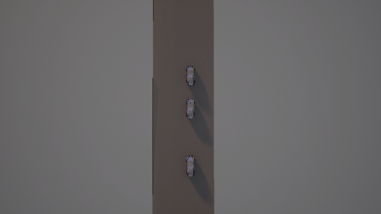
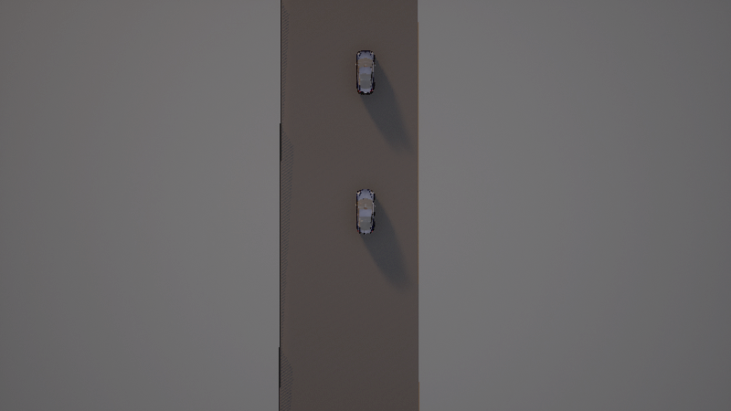
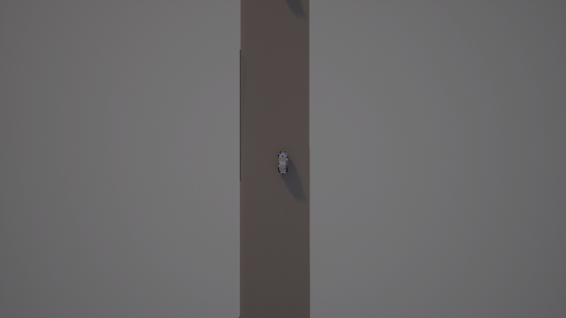
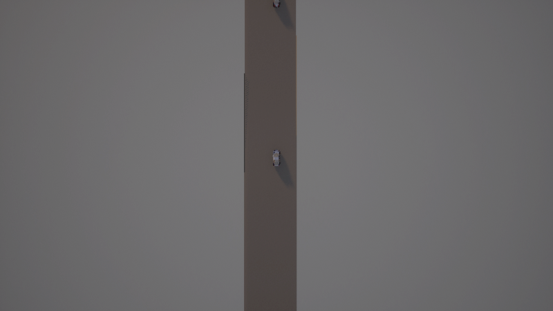

新增特性：场景生成、路网生成与 CARLA 执行
本次新增三组能力，目标是解决两个问题：场景生成效率和基于实采有限数据生成批量合成数据。
| 能力 | 解决的问题 |
|---|---|
| 参数化场景生成（OpenSCENARIO） | 原来只会生成"一辆车匀速直行"，没有中间表示，无法批量 |
| 参数化路网生成（OpenDRIVE） | 原来唯一的 xodr 出自 netconvert 规则网格，没有几何 |
| 场景执行与截图 | 生成的 .xosc 无法播放，无法验证"跑起来是什么样" |
| 实采轨迹批量合成 | 少量真实轨迹扩增为大批量合成数据，并做分布校验 |
1. 环境配置
1.1 基础环境
| 项目 | 版本 | 说明 |
|---|---|---|
| Python | 3.10 | CARLA PythonAPI 的 wheel 只提供到 3.10 |
| CARLA | 0.9.16 | carla==0.9.16 |
| 操作系统 | Windows 10 / 11 | CARLA 服务端只在这里跑 |
1.2 安装 Python 依赖
cd mcp
pip install -r llm/requirements.txt
关键新增依赖：
scenariogeneration>=0.16.0 # OpenSCENARIO / OpenDRIVE 对象模型
lxml>=5.0.0 # XSD 校验
carla==0.9.16 # CARLA 客户端
scenariogeneration在库内是延迟导入的，缺失时不影响 MCP 服务启动， 只有调用场景/路网相关工具时才会报错。
1.3 配置 DeepSeek API Key
在项目根目录创建 .env：
DEEPSEEK_API_KEY=sk-xxxxxxxxxxxxxxxx
1.4 启动 CARLA
用无界面模式启动（省显存，适合服务器/集显机器）：
cd D:\CARLA_0.9.16
CarlaUE4.exe -RenderOffScreen -quality-level=Low -nosound -carla-port=2000
成功标志：进程 CarlaUE4-Win64-Shipping 存在，端口 2000 处于监听状态。
也可以在对话里直接问「CARLA 连上了吗」，会调用 list_carla_maps 返回服务端版本与可用地图列表。
1.5 启动 MCP 服务
mcp.bat
或手动：
python llm/main_ai.py
浏览器打开 http://127.0.0.1:3000，页面顶部的「场景快捷按钮」面板可以不输入文字直接执行场景。
2. 提示词示例
2.1 生成 OpenSCENARIO 场景
列出所有可用的场景模板
用 cut_in 模板生成一个场景，随机种子设为 42
生成 20 个前车急刹的场景，每个参数在合理范围内随机
校验刚才生成的场景文件
2.2 生成路网
列出所有路网布局
生成一个十字路口路网
生成一个匝道合流路网，主路 4 车道、匝道 2 车道
2.3 把生成的场景跑进 CARLA
把十字路口路网加载进 CARLA 并截图
在 CARLA 里播放 cut_in 场景，第 2 秒和第 5 秒各截一张图
把 wrong_way 场景跑 6 秒看看效果
2.4 实采轨迹批量合成
导入 _traj_samples 里的轨迹数据
基于这些轨迹合成 100 条数据
对比合成数据和真实数据的分布
把轨迹导出成 SUMO 的需求文件
3. 效果演示
3.1 路网生成：7 种布局全部可加载
下面 6 种布局全部由本项目生成的 .xodr 在 CARLA 0.9.16 中渲染，不是导入的现成地图。

| 布局 | 文件大小 | 道路数 | 几何段数 | 生成点 |
|---|---|---|---|---|
| 直路 | 2626 B | 1 | 1 | 2 |
| 高速弯道 | 3071 B | 1 | 1 | 2 |
| S 弯 | 3694 B | 1 | 1 | 2 |
| 十字路口 | 22708 B | 12 | 28 | 12 |
| 丁字路口 | 17023 B | 9 | 21 | 9 |
| 匝道合流 | 4195 B | 1 | 1 | 4 |
| 匝道分流 | 3496 B | 1 | 1 | 3 |
十字路口

丁字路口

匝道合流

S 弯

3.2 场景执行：8 个模板全部可播放
播放器会解析 .xosc 的实体、触发条件与动作，按仿真时间驱动车辆并截图。

| 模板 | 场景含义 | 实体 | 触发事件 | 未支持项 |
|---|---|---|---|---|
lead_stationary |
前车静止 | 2 | 1/1 | 0 |
wrong_way |
逆行 | 2 | 2/2 | 0 |
crossing_hazard |
行人横穿 | 2 | 2/2 | 0 |
junction_light |
路口信号 | 3 | 3/3 | 0 |
lead_brake |
前车急刹 | 3 | 3/4 | 0 |
low_overlap |
低重叠目标 | 3 | 4/4 | 0 |
unprotected_turn |
无保护通行 | 3 | 4/4 | 0 |
cut_in |
危险切入 | 4 | 4/5 | 0 |
前车急刹

无保护通行

低重叠目标

3.3 场景生成：一份配置生成多个变体
同一个模板配合不同的随机种子，会得到参数区间内的不同场景，但结构一致：
from scenario_templates import build
from osc_builder import write_scenario
for seed in range(20):
spec = build("lead_brake", seed=seed) # 前车速度、间距、刹车时刻都在区间内随机
write_scenario(spec, "output/lead_brake_%02d.xosc" % seed)
批量生成 50 个场景约 6.9 秒，且不会产生重复场景（用指纹去重）。
4. 实测数据
| 项目 | 结果 |
|---|---|
| OSC 生成器往返解析 | 4 场景 × 4 版本 = 16/16 通过 |
| 场景模板 | 8/8 编译与校验通过，同 seed 指纹一致 |
| 批量场景 | 50 个 6.86 s，80 个混合 10.89 s，重复 0 |
| 路网布局 | 7/7 生成并通过几何校验 |
| CARLA 加载 | 7/7 成功，每种约 7 秒（含 2 秒世界加载） |
| 场景播放 | 8/8 模板跑通，未支持项 0 |
| 轨迹导入 | CSV / FCD / JSON 三种格式全部通过 |
| 批量合成 | 100 条 0.17 s（595 条/秒），100/100 成功 |
| 分布对比 | 速度 KS 距离 0.029 |
5. 已知限制
5.1 播放器是子集实现
不支持的条件与动作会记入 unsupported 并明确返回，不会静默跳过：
- 条件：
CollisionCondition、TimeToCollisionCondition、RelativeSpeedCondition、AccelerationCondition - 动作：
FollowTrajectoryAction、Story分支、Catalog、TrafficSignalControllerAction
跟驰用 P 控制、变道用纯追踪，都没做加速度约束；freespace / alongroute 按直线距离处理。
5.2 路口环是折线拼接
CommonJunctionCreator 用直线连接各臂端点，十字路口呈现为菱形环而不是正方形环。拓扑正确、可通行，但几何不是真实交叉口的样子。
5.3 CARLA 客户端断言
一次进程内连续切换多个世界会偶发 _episode != nullptr 断言（引擎侧问题）。目前的规避方式是每种布局跑独立进程。
5.4 测试环境
集显 + -quality-level=Low 下完成，未在独立显卡 / 高画质复验。
5.5 轨迹数据
当前没有真实车队数据，测试用符合 NGSIM 格式的合成样本（3 条 / 180 帧 / 10 Hz）。拿到实采数据后需要重跑分布对比确认增强强度是否合适。